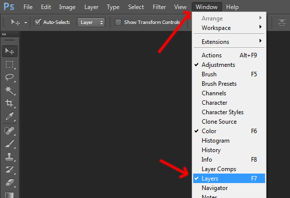
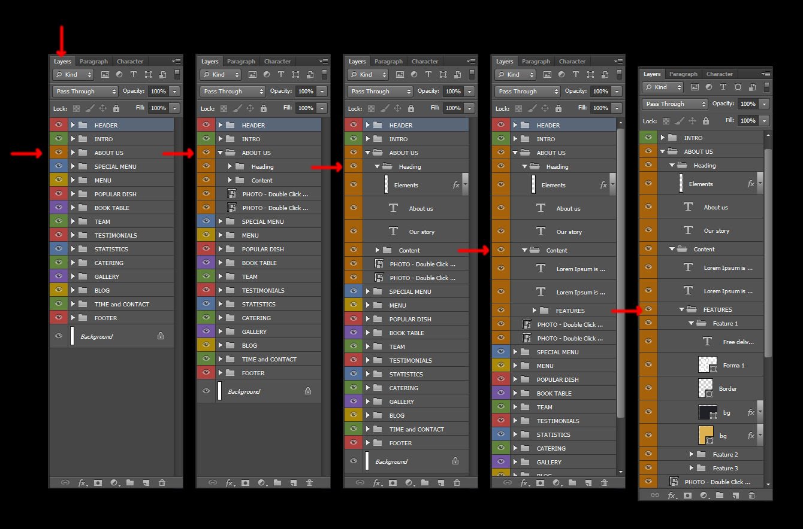
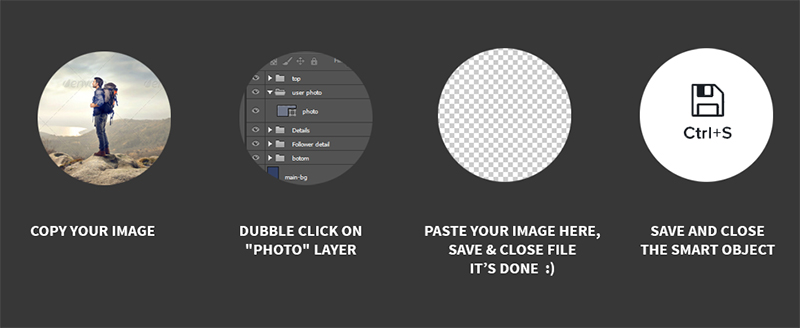

Thank you for purchasing Restoria - Restaurant Landing Page PSD Template . If you have any questions that are beyond the scope of this help file, please feel free to email, via my user page contact form or put a ticket at Support Center .
Thankyou so much!



Fonts Used are :
Fraunces
https://fonts.google.com/specimen/Fraunces
Urbanist
https://fonts.google.com/specimen/Urbanist
Herr+Von+Muellerhoff
https://fonts.google.com/specimen/Herr+Von+Muellerhoff
Icons Used are :
Icofont
https://icofont.com/
Flaticon Icons
flaticon.com
From Flaticon, Icons are custom selected and downloaded as a font. If you want to use more icons you need to select icons of your choice from flaticon.com as font files and replace with the already added files.
(Previous Flaticon icons will be removed when you will use your own selected/downloaded Flaticons font)
Email Us at : sanjaypro89@gmail.com